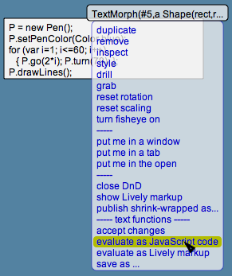
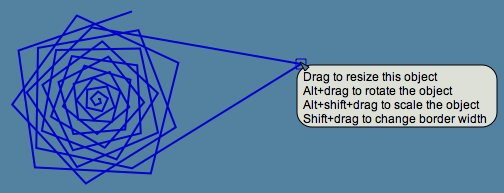

Lively Kernel Tutorial: (12) Modifying Objects and JavaScript Code on the Fly
Back to Introduction
PREVIOUS
Source code of this demo
NEXT
Since the Lively Kernel environment is built around JavaScript,
a highly dynamic programming language that does not require
applications to be compiled ahead of time, virtually every object
in the system can be modified on the fly.
On this tutorial page we have included a number of textual scripts
that you can execute and modify on the fly.
You can execute the scripts by using the "evaluate text"
feature that is available in the popup menu for TextMorphs.


Notes:
- To open the popup menu for TextMorphs, press the Command (Alt) key
while clicking the top area of the TextMorph (above the topmost line of text).
TextMorphs can be edited and evaluated also using the following keyboard shortcuts (these do not yet work on all browsers):
- Command-S (Alt-S): Save (accept) the changes
- Command-A (Alt-A): Select All
- Command-X (Alt-X): Cut
- Command-C (Alt-C): Copy
- Command-V (Alt-V): Paste
- Command-Z (Alt-Z): Undo
Try it yourself! Try evaluating the scripts that have been provided
in the four TextMorphs above.
Try modifying the scripts yourself to generate different kinds of graphical objects.
Note that the objects generated by the scripts are full-fledged Morphs that can
be edited using handles, menus and other features presented earlier in this tutorial.